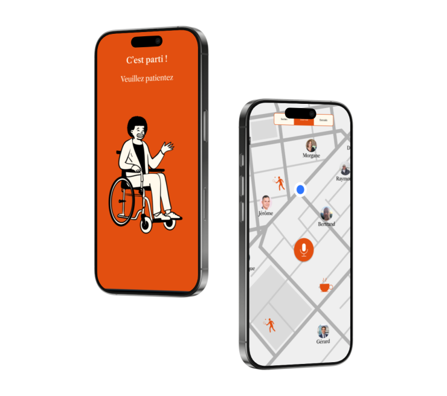

Notre Évolution Design

Sketches
Dessins des premières fonctionnalités : personnalisation et planification de l'entraide.

Wireframes
Mise à plat de l'ergonomie en noir et blanc pour valider le parcours utilisateur.

Version testée
Interface finale après retours utilisateurs : plus de contrastes et boutons agrandis.